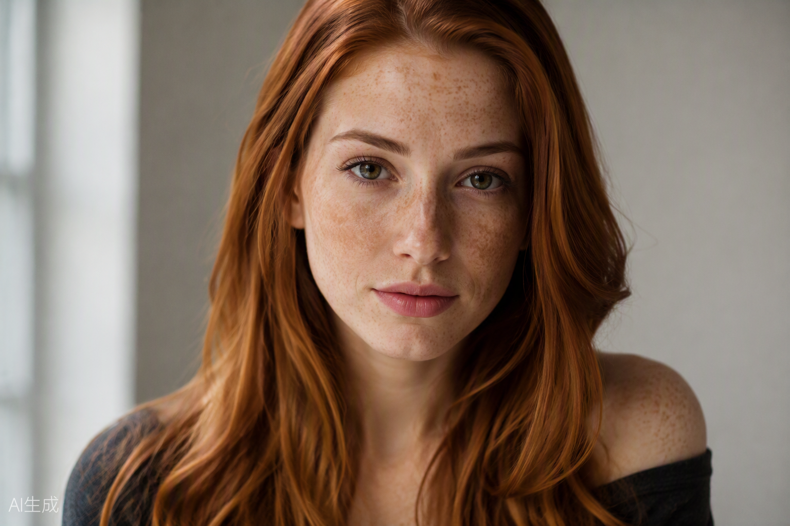
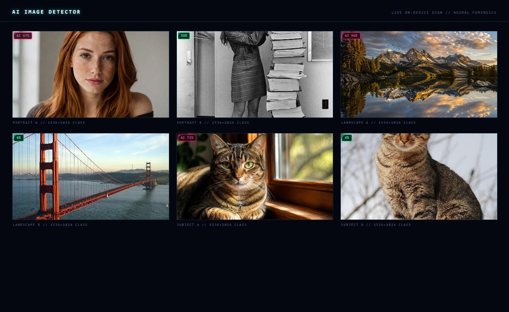
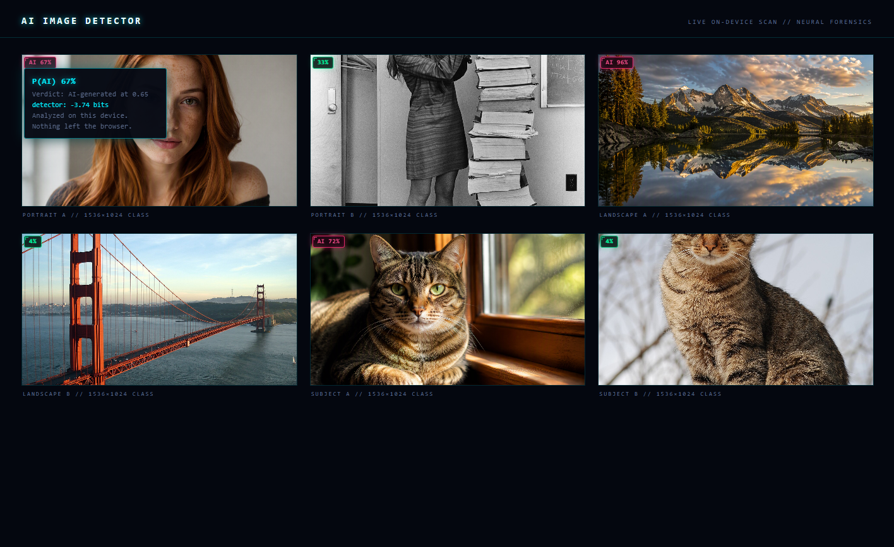
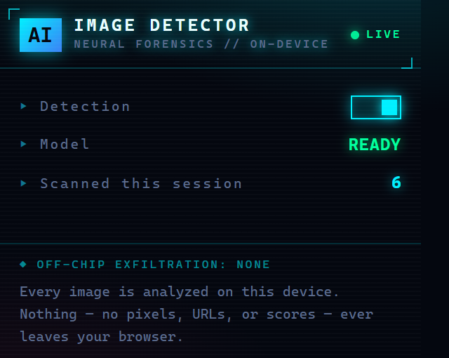

AI GENERATEDAI IMAGE DETECTOR
Local neural image forensics for Chrome. Every screenshot below is captured from the real extension running on-device ONNX inference — no mock scores, no cloud, no staging.
ON-DEVICE
Inference — zero cloud calls
ViT-S/16
Community Forensics 384px
INT8 · 23.9MB
SHA-256 verified artifact
0 bytes
Pixels leaving the browser
01
LIVE PAGE SCAN
Inference runs where the pixels already are: inside the browser, in an offscreen
ONNX/WASM runtime, because Manifest V3 service workers can't host the neural engine.
Cross-origin pixels are read as bytes — never a tainted canvas — and the verdict is a
calibrated probability, not a raw logit, so the 0.65 boundary means the
same thing on every page. Badges live in a closed shadow root no site's CSS can touch,
and nothing — no image, URL, or score — ever leaves the machine.

02
BADGE DETAIL & POPUP
Clicking a scored badge opens its per-signal breakdown. The popup shows live model state, session scan count, and the master switch — with the same “nothing leaves this device” contract printed in the footer.


03
REAL VS. SYNTHETIC
The gallery subjects themselves: AI-generated images from a modern text-to-image model against real photographs (Wikimedia Commons, public domain). The detector scores them through the exact pipeline shown above.
REAL PHOTO
PORTRAITTEXT-TO-IMAGE VS. FILM SCAN
AI GENERATED
REAL PHOTO
LANDSCAPESYNTHETIC VS. GOLDEN GATE, 35MM
AI GENERATED
 REAL PHOTO
REAL PHOTOSUBJECTSYNTHETIC TABBY VS. REAL TABBY
04
WHAT THE SCREENSHOTS PROVE
Every badge above traveled the full forensic path inside the browser:
STEP 01
DISCOVER
Content script finds images in every frame, including CSS backgrounds and lazy-loaded sources.
STEP 02
FETCH BYTES
Pixels are read as bytes — never from a tainted canvas — with cookies stripped.
STEP 03
INFER
Offscreen ONNX/WASM runtime scores the official 440→384 center-crop transform.
STEP 04
CALIBRATE
Per-signal calibration, weighted log-odds fusion, sigmoid, fixed 0.65 decision boundary.
STEP 05
BADGE
Verdict renders in a closed shadow root. Nothing is uploaded — there is no server.